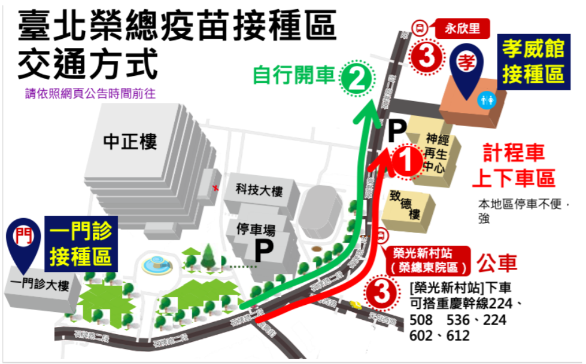

Source #1: Taipei Hospitals here
Source #2: New Taipei Hospitals here
They will notify people from 5:00 to 5:10. Must arrive by 5:30.
Located in Neihu (20min drive): 台北市內湖區成功路二段325號
初診人員需至門診大廳櫃台辦理初診手續.
First-time patients need to go to the counter of the outpatient hall to complete the first-time consultation procedures.
Must arrive within 15 mins of phone call
Located in Taishan District (25-30min drive): 新北市泰山區貴子路69號
報到地點: 二樓255診間前COVID-19疫苗報到櫃檯
Registration location: COVID-19 vaccine registration counter in front of the 255 consultation room on the second floor
It looks like they pool registrations from M-W, and Th-Fr together.
More infoIf selected, they will start calling around 4:00 P.M. Must arrive within 1 hour.
There are two possible locations (both in Beitou, 30min drive) they will ask you to go to:
1. 孝威館 (xiao4wei1guan3)：台北市北投區石牌路二段322號
2. 第一門診2樓「COVID-19疫苗接種區」：台北市北投區石牌路二段201號
 Link to source website, in case info changesID format must conform. First, try: A130283234. If that doesn’t work, confirmed fake: A130283232
Taipei location (20min drive): 台北市中山區中山北路二段92號
MacKay Taipei will finish notifying people by 5:00 P.M. weekdays, and noon on Saturdays.
Dansui location (30-40min drive): 新北市淡水區民生路45號; go to 達馬偕樓3樓356診間 (3rd floor, rm 356)
No clear time when MacKay Dansui starts to notify people.
MacKay Dansui requires that you arrive and check in by 4:40 P.M. weekdays, or 11:40 A.M. on Saturdays
如未曾於馬偕醫院看診，須先持前述證件至掛號櫃台處辦理初診報到，再至診間。
If you have not seen a doctor at Mackay Hospital, you must first go to the registration counter to register for the first consultation with the aforementioned documents (ARC/passport/health card), and then go to the consultation room.
No need for another info link, because the registration page has all the info.
They will notify people from 4:00 to 4:15. Must arrive by 4:30.
Located in Banqiao (30-40min drive): 新北市板橋區南雅南路二段21號
Phone numbers: (02)2708-2121 #1286 or #9
Just a 10 min drive: 台北市大安區仁愛路四段280號
Seems impossible to reach by phone
Located in Yonghe (15-25min drive): 新北市永和區中興街80號
Located in Wenshan District (15min drive): 台北市文山區興隆路三段111號